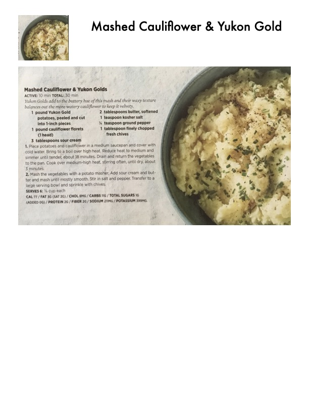

Mashed Cauliflower & Yukon Gold

Original cookbook page 46
Yukon Golds add to the buttery heft of this mash and their waxy texture balances out the more-watery consistency of cooked cauliflower. The result: rich, creamy comfort.
Prep: 10 minutes • Cook: 20 minutes • Total: 30 minutes
Ingredients
- 1 pound small Yukon Gold potatoes, peeled and cut into 1-inch pieces
- 1 pound cauliflower florets (1 head)
- 1/4 cup low-fat sour cream
- 1 teaspoon kosher salt
- 1/4 teaspoon ground pepper
- 1 tablespoon finely chopped fresh chives
Instructions
- Place potatoes and cauliflower in a medium saucepan and cover with cold water. Bring to a boil over high heat. Reduce heat to medium and simmer until tender, about 18 minutes. Drain and return the vegetables to the pan. Cook over medium-high heat, stirring often, until dry, about 1 minute.
- Mash the vegetables with a potato masher. Add sour cream and butter and mash until mostly smooth. Stir in salt and pepper. Transfer to a large serving bowl and sprinkle with chives.
Recipe #46 from collection